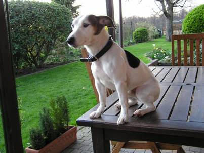

ROMEO

Wij willen jullie graag alle jaren wat financieel steunen als dank voor onze Roméo die we toen bij jullie geadopteerd hebben in maart 2004 (geboren in september 98) en we hebben moeten afgeven in juli 2017 met heel veel verdriet.
Met vriendelijke groeten